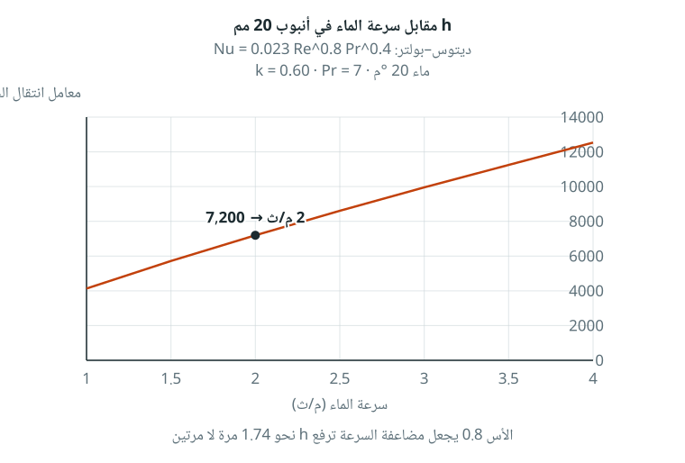

معامل انتقال الحرارة
Heat Transfer Coefficient
عدد يختزل تعقيدات الحمل فيربط الفيض الحراري بفرق الحرارة: q″ = h ΔT، ووحدته W/(m²·K). ليس خاصية مادة بل نتاج هندسة وجريان ومائع، ويُحسب من رقم نوصلت Nu = hL/k.
معامل انتقال الحرارة h يختزل تعقيدات الحمل في عدد واحد يربط الفيض الحراري بفرق الحرارة: q″ = h(T_s − T_∞)، ووحدته W/(m²·K). ليس خاصية مادة، بل خاصية هندسة وجريان ومائع معًا، ويتغيّر مع السرعة والطول المميّز وخشونة السطح ونوع السائل.
تُصنَّف قيمه بحسب النمط: في الحمل الحرّ بالهواء 2 إلى 25 W/(m²·K)، وفي الحمل القسري بالهواء 25 إلى 250، وفي الماء القسري 1,000 إلى 10,000، وفي الغليان والتكثيف 5,000 إلى 100,000. هذه المراتب تفسّر لماذا يحتاج مبادل الهواء إلى سطح أضعاف سطح مبادل الماء لأداء المهمة نفسها.
يرتبط h بالارتباطات اللابعدية عبر رقم نوصلت: Nu = hL/k، ثم يُحسب Nu من علاقة على شكل C Re^m Pr^n، حيث L الطول المميّز المستخدم في تعريف Nu نفسه، وPr نسبة انتشار الزخم إلى انتشار الحرارة.
كيف تعمل الظاهرة؟
تمر الحرارة من السطح إلى المائع عبر طبقة حدّية حرارية: عند السطح تكون السرعة صفرًا، فينتقل الجزء الأول من الحرارة بالتوصيل عبر غشاء رقيق، ثم يحملها الجريان إلى الخارج. معدّل النقل يحدّده تدرّج الحرارة عند الجدار، وh تعرّف بأنها q″/ΔT أي h = −k (∂T/∂y)_w / (T_s − T_∞). فكل ما يرقّق الطبقة الحدّية أو يزيد التدرّج يرفع h: زيادة السرعة، أو الانتقال إلى الاضطراب، أو مائع ذو موصلية ونسبة برانتل مناسبتين. لذلك يتناسب h مع v^0.8 في الأنابيب المضطربة، ويتوقّف ظهور هذا الأس على بقاء النمط مضطربًا.
العلاقة بالأرقام
ماء عند 20 °م في أنبوب 20 مم بسرعة 2 m/s: Re = ρvD/μ = 39,800، وPr ≈ 7. بمعادلة ديتوس–بولتر Nu = 0.023 Re^0.8 Pr^0.4 يكون Nu ≈ 240، ومنها h = Nu·k/D = 240 × 0.60 / 0.02 ≈ 7,200 W/(m²·K). الزيادة إلى 4 m/s ترفع h إلى 12,500، أي نسبة 1.74 مقابل مضاعفة السرعة، لأن الأسّ 0.8. وبالمقارنة، هواء بحمل حرّ على جدار عمودي يعطي نحو 4 W/(m²·K): فرق يبلغ نحو ثلاثة أمثال عددية.
مفاهيم متقاربة
الخلط الأول: مساواة h بالموصلية k. الأولى معامل انتقال سطح إلى مائع بوحدة W/(m²·K)، والثانية خاصية مادة بوحدة W/(m·K)؛ لا تُجمعان ولا تُقارنان مباشرة. الثاني: نقل h من جدول دون تحديد المساحة المرجعية والطول المميّز؛ قيمة h لأنبوب داخلي لا تصلح لجداره الخارجي ولا لأسطوانة في جريان متعامد. الثالث: مساواة h بمعامل الانتقال الكلي U؛ فـU يشمل مقاومة الجدار والاتساخ ويعرّف على مساحة محدّدة، ويكون أصغر من h في التبادل بين سائلين.
حدود التطبيق
معظم ارتباطات h تجريبية بخطأ ±15 إلى 25%، وتفترض خواص ثابتة تُقيَّم عند حرارة الفيلم. تفشل عند الحمل المختلط حيث يتقارب الحرّ والقسري، وعند انعدام الجاذبية حيث يختفي الحمل الحرّ، وفي الغليان عند انتقال النمط من النووي إلى الغشائي حيث تتعثّر h. التلوّث والترسّب يضيفان مقاومة تغيّر h المقاس مع الزمن. وعند الأسطح الخشنة أو المموّجة يعتمد h على موضع القياس، فتُستعمل قيم متوسطة على مساحة محدّدة وبشرط تشغيل معلن.

| الكمية | القيمة | المصدر |
|---|---|---|
| معامل انتقال الحرارة لماء في أنبوب 20 مم بسرعة 2 م/ث | 7,200 W/(m²·K) | [1] |
| القيمة نفسها عند 4 م/ث | 12,500 W/(m²·K) | [1] |
| رقم نوصلت المقابل | 240 بلا وحدة | [1] |
| رقم رينولدز في الحالة | 39,800 بلا وحدة | [2] |
| معامل الحمل الحرّ لهواء على جدار عمودي | 4 W/(m²·K) | [1] |
المصادر
- 1 Convective Heat Transfer — The Engineering ToolBox. www.engineeringtoolbox.com/convective-heat-transfer-d_430.html · اطُّلع عليه 2026-11-16
- 2 Overall Heat Transfer Coefficients for Fluids and Heat Exchanger Surfaces — The Engineering ToolBox. www.engineeringtoolbox.com/overall-heat-transfer-coefficients-d_284.html · اطُّلع عليه 2026-11-16
- 3 University Physics Volume 2 — 1.6 Mechanisms of Heat Transfer — OpenStax. openstax.org/books/university-physics-volume-2/pages/1-6-mechanisms-of-heat-transfer · اطُّلع عليه 2026-11-16
استشهد بهذا المصطلح
الصيغتان مبنيتان من بيانات الصفحة نفسها: العنوان والتاريخ ورابط النسخة المنشورة.
معامل انتقال الحرارة — Heat Transfer Coefficient. (2026). ديوان المعرفة — انفراد. https://infiradev.com/diwan/terms/heat-transfer-coefficient.html
@misc{heat-transfer-coefficient2026,
title = {معامل انتقال الحرارة},
titleaddon = {Heat Transfer Coefficient},
howpublished = {{ديوان المعرفة — انفراد} — مرجع علمي عربي},
year = {2026},
url = {https://infiradev.com/diwan/terms/heat-transfer-coefficient.html},
urldate = {2026-11-16},
note = {مراجعة علمية: مراجعة آلية — ديوان المعرفة (روابط المصادر + عقد المحتوى + وجود الرسم) 2026-11-16}
}
راجعه: مراجعة آلية — ديوان المعرفة (روابط المصادر + عقد المحتوى + وجود الرسم) 2026-11-16 · 2026-11-16 · آخر تحديث 2026-11-16